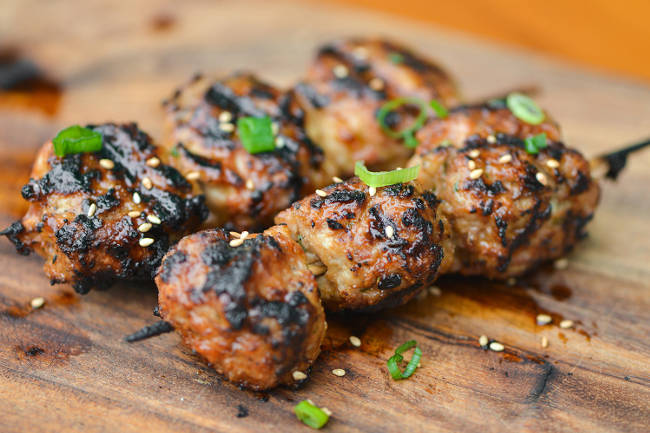

На углях
Цукуне — маленькие японские котлеты из куриного фарша на шпажках
Цукуне (Tsukune) — это японские куриные котлеты с соусом Терэ, который более известен как соус Якитори, которые популярны в японских ресторанах Якитори. Иногда, для убыстрения приготовления используется соус терияки. Часто маленькие мясные шарики цукуне насажены на бамбуковые палочки и приготовлены на угольном гриле, но также они могут быть обжарены на сковороде (рецепт).
Стейк на углях с коричневым маслом
Это рецепт приготовления стейка из говядины на углях. Причем непосредственно на углях. В качестве гарнира используется молодая морковь, а коричневое сливочное масло с лавровым листом придаст мясу сочность и аромат. Для приготовления этого блюда понадобится решетка и пара кирпичей, которые будут служить подставками для посуды с маслом и морковью. Это блюдо можно приготовить и в камине, совсем не обязательно разжигать мангал или котел барбекю (рецепт).
Запеченный цыпленок с соусом песто и персиками

Простое, очень ароматное блюдо итальянской кухни из минимума ингредиентов, которое прекрасно украсит ваш пикник или праздничный стол. Приготовить цыпленка в соусе песто с персиками можно и в духовке и над углями. Второй вариант предпочтительнее, поскольку будет аромат дымка. К блюду также очень хорошо подойдет лепешка с песто, испеченная над углями (рецепт).